・下の写真はフィラメントをノズルに押し込んでいく歯車です。この時は、すでにノズルが詰まっていたため歯車が空回りしています。
そのため押さえつけられているフィラメントが削られ、溝に詰まっている様子が見てわかります。
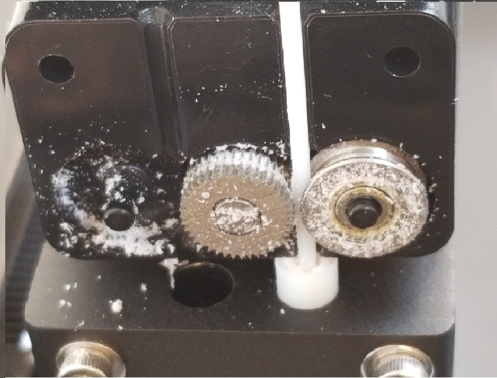
・まずは歯車全体が見えるように黒いパーツを分解していきます。
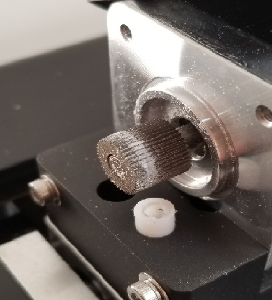
・細く硬めの素材のもので詰まったフィラメントを除去し綺麗にして完成です。
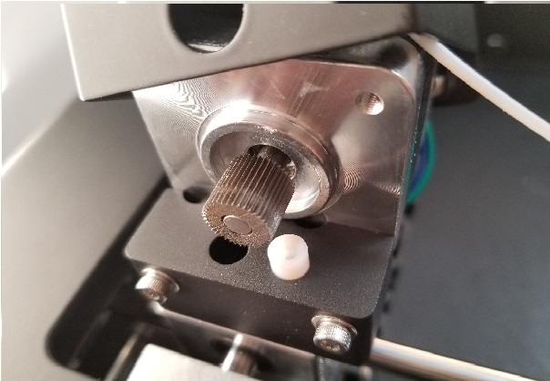
・このように割れてしまった蓋を直していきます。
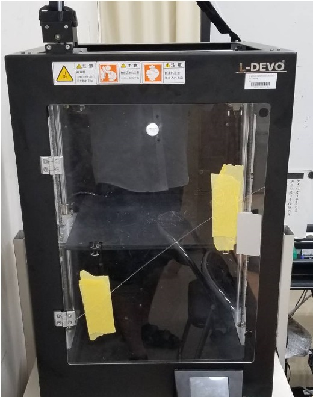
・壊し方は次の通りです。
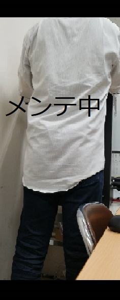
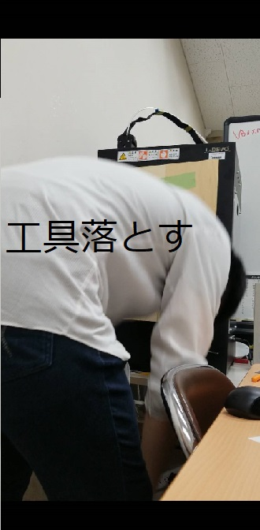
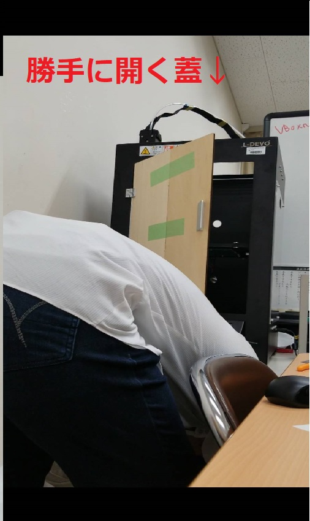
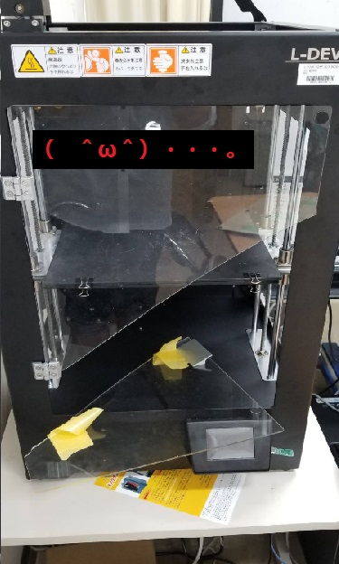
・このような不注意は1番気を付けなくてはならないことです。
私は気が緩み、目先の工具を拾うことにすべての神経を集中させておりました。
その結果、蓋が開いているなんて考えもせずに起き上がりました。背中に刺さりました。アクリル。
・まず割れたアクリルの寸法を測り、木材でプロトタイプを作っていきます。
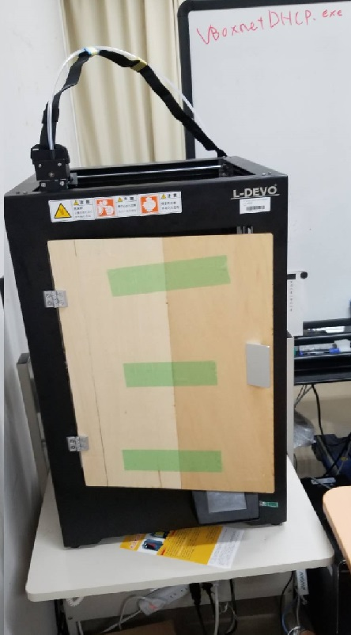
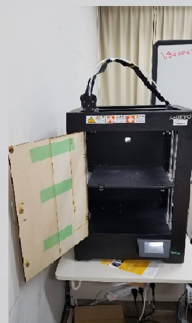
・写真ではいい感じに見えますが左側の4か所のねじの位置が若干広いので修正していきます
・下の写真は修正したデータをもとに、実際にアクリルを加工したものです。
・完成しました☆彡

・ついでにですが、先生の研究室から、ファブラボにL-DEVOを移動させました。
・今回は諸事情により私専用とさせていただきます。おさわり厳禁ということで。
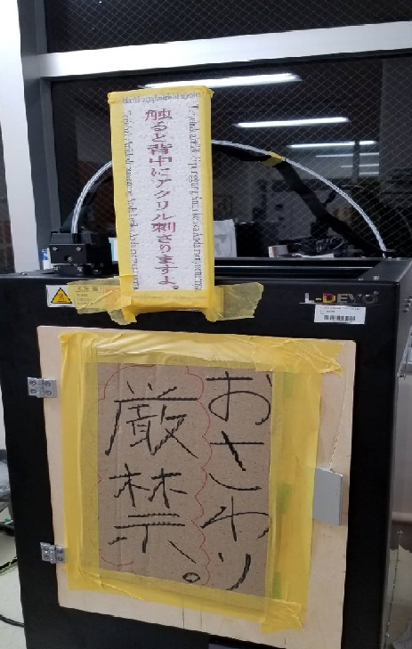
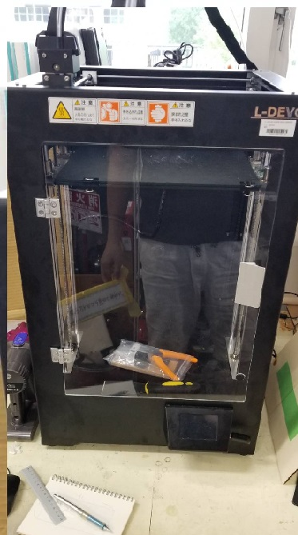
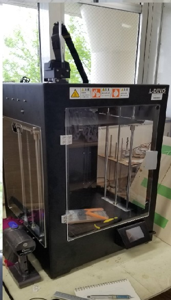